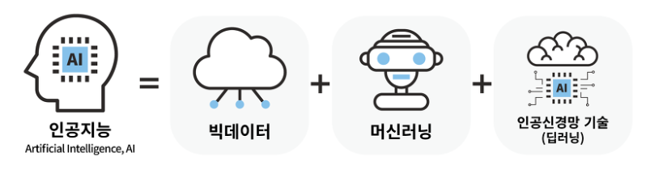
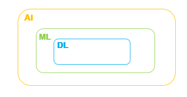
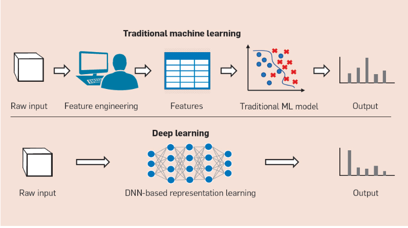
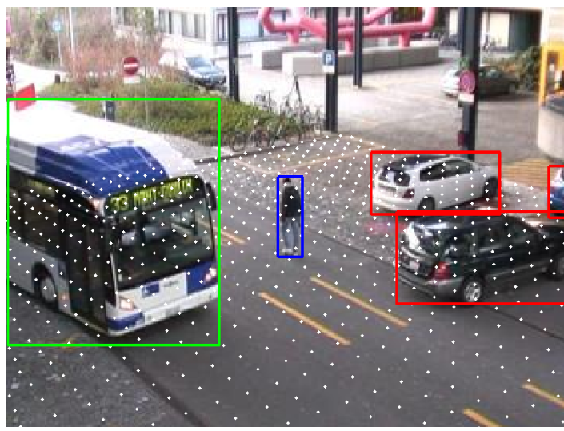
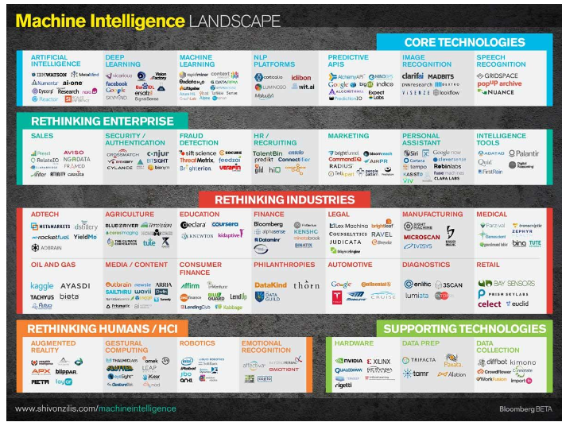

1. AI, ML, DL 개념
Artificial Intelligence ,AI
인공지능은 인간의 학습능력, 추론능력, 지각능력, 언어 이해능력 등을 컴퓨터에 구현한 기술이다.
사람만 할수있었던, 가치 판단, 학습, 인식, 의사소통, 심리상태 추론 등 기계로는 할 수 없던 일들을 가능케 하는기술이다
이 분야는 , 빅데이터를 기반으로 분석을 하고
분석한 데이터를 가지고 학습하며,
학습한 내용을 가지고 복잡한 문제의 답을 찾거나, 가치판단을 하거나, 결과를 예측하는 기술이다.
많은 데이터를 기반으로한 학습을 흔히 머신러닝 (기계학습, Machine Learning )이라고 말한다.
빅데이터를 기반으로 스스로 학습하여 결정을 내리는 수많은 알고리즘들이 존재하는데,
이보다 복잡한 하드웨어(슈퍼컴퓨터)와 복잡하고 방대한 빅데이터를 이용하여,
뇌의 구조와 같은 인공신경망에서 이루어지는 기계학습을 딥러닝(Deep Learning) 이라고 말한다.
즉, 머신러닝과 딥러닝은 다른 개념이아니라 집합관계이다.
2. 머신러닝과 딥러닝의 가장 큰 차이점
1. 데이터량이 적으면 딥러닝이 불가능하다. - 데이터 의존적
2. 하드웨어가 슈퍼컴퓨터 급의 고사양이 아니라면, 딥러닝이 불가능하다. - 하드웨어 의존적
3. 딥러닝은 Input데이터, Feature에 대한 Engineering이 필요없다. - High-Level-Features 학습

4. 문제해결 과정 간소화
ML 알고리즘으로 문제를 해결할때는 각각의 문제를 여러 파트로 쪼개 답을 구해서 합치는 방법을 사용하지만,
알고리즘은 문제를 쪼개지않고, End to End 형식으로 문제를 해결한다.
EX > 이미지상에서 사람을 찾으시오
ML > 이미지분석, 사물 탐지, 사물 인지 등의 여러 과정을 거침
DL > 이미지별 객체 이름과 위치가 바로 표시됨.
5. 짧은 실행시간
딥러닝은 훈련시간이 매우길게 걸리지만, 훈련된 모델안에서 Test결과는 ML과 비교했을때 훨씬더 짧게 걸립니다.
6. 결과 해석 불가
딥러닝의 치명적인 단점으로 사용시 10번이고 고민할 수 밖에없는 부분이다.
답이 도출되었을때, 왜 어떠한 근거로 이러한 결과를 내었는지를 말해주지 않기 때문에, 사람이 그 결과를 해석하지 못함
ML은 우리가 Engineering한 범위내에서 결과에 대한 명확한 이유와 원인등을 알수있기에 ML을 선호한다.
따라서, DL을 사용할때 결과에 대한 해석이 필요한경우,
Desion Tree, 선형회귀모형 등과 같은 해석가능한 알고리즘을 활용한다.
3. ML, DL 활용 분야
현재 머신러닝과 딥러닝은 어떠한 분야에 쓰이며, 앞으로 어떤 분야에 활용될까?
이미 알다싶이 딥러닝을 활용한 알파고, 스타그래프트 등 게임분야의 활용되어 세계의 이목을 끌었지만,
실생활에서는 자율주행 자동차, 자율택시 등과같은 교통산업
ML을 이용한 암진단, 암수술, 등의 의료분야 사업
IT분야에서 사용자의 선호와 패턴등을 분석한, 광고상품 추천, 유튜브 컨텐츠 추천
그 외에 기상분석, 환율, 주식, 경제분야의 통계적인 추론 등의 널리 활용되고 있고, 분야의 제한이 없이 적용될 것이다.
늦었지만, 함께 공부하자!
Html Study_Clone Site: https://bangu4.tistory.com/95